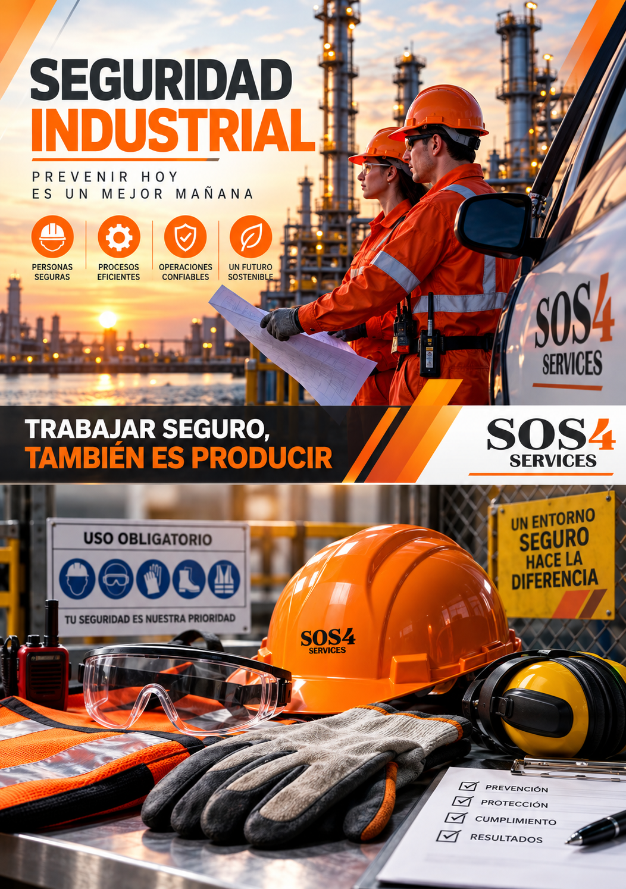

Sistema de Confiabilidad Operacional
Identificación, evaluación y mitigación de riesgos para fortalecer la integridad de equipos y procesos, contribuyendo al desempeño seguro de las operaciones.
Identificación, evaluación y control de riesgos para fortalecer la seguridad, integridad y confiabilidad de las operaciones.

En SOS4 SERVICES desarrollamos soluciones orientadas a identificar, evaluar y controlar riesgos asociados con equipos, procesos y actividades industriales.
Nuestro enfoque integra análisis de riesgos, confiabilidad operacional y evaluación de condiciones de seguridad e higiene.
El objetivo es fortalecer la prevención, reducir condiciones peligrosas y contribuir a la integridad de los procesos y equipos de la organización.
Desarrollamos herramientas y evaluaciones orientadas a fortalecer la seguridad y confiabilidad de las operaciones.
Identificación, evaluación y mitigación de riesgos para fortalecer la integridad de equipos y procesos, contribuyendo al desempeño seguro de las operaciones.
Evaluación especializada de procesos y equipos críticos que manejan sustancias químicas peligrosas, orientada a identificar escenarios, evaluar riesgos y establecer medidas preventivas y correctivas.
Desarrollo de atlas de riesgo a partir del diagnóstico de condiciones de seguridad e higiene para identificar peligros y fortalecer las medidas de control.
El análisis de riesgos permite identificar escenarios que pueden afectar a las personas, instalaciones, procesos y continuidad operativa.
Identificación de riesgos asociados al manejo de sustancias químicas peligrosas.
Evaluación de procesos cuya falla pueda generar consecuencias importantes para la operación.
Identificación de equipos relevantes para la seguridad y continuidad de los procesos.
Desarrollo de medidas preventivas y correctivas orientadas a reducir los riesgos identificados.
La confiabilidad operacional integra la identificación y control de riesgos con acciones orientadas a mantener la integridad de los equipos, mejorar el desempeño de los procesos y fortalecer la continuidad de las operaciones.
El desarrollo de un atlas permite organizar y representar información relacionada con riesgos y condiciones peligrosas presentes en una instalación.
Identificación de condiciones de seguridad e higiene dentro de la instalación.
Organización de la información para localizar áreas y condiciones relevantes.
Definición de acciones orientadas a reducir y controlar condiciones peligrosas identificadas.
Aplicamos un enfoque estructurado para identificar peligros, evaluar riesgos y establecer medidas de control.
Reconocimiento de peligros, condiciones inseguras y escenarios potenciales.
Análisis de riesgos y posibles consecuencias para la operación.
Definición de controles y medidas preventivas para reducir riesgos.
Seguimiento de resultados y fortalecimiento continuo de las condiciones de seguridad.
Podemos apoyarte con análisis de riesgos, confiabilidad operacional, diagnósticos y desarrollo de atlas de riesgo.